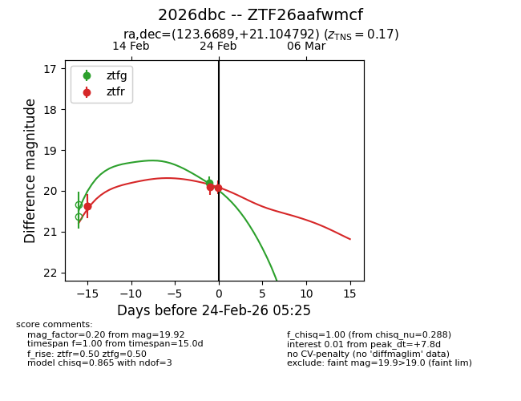
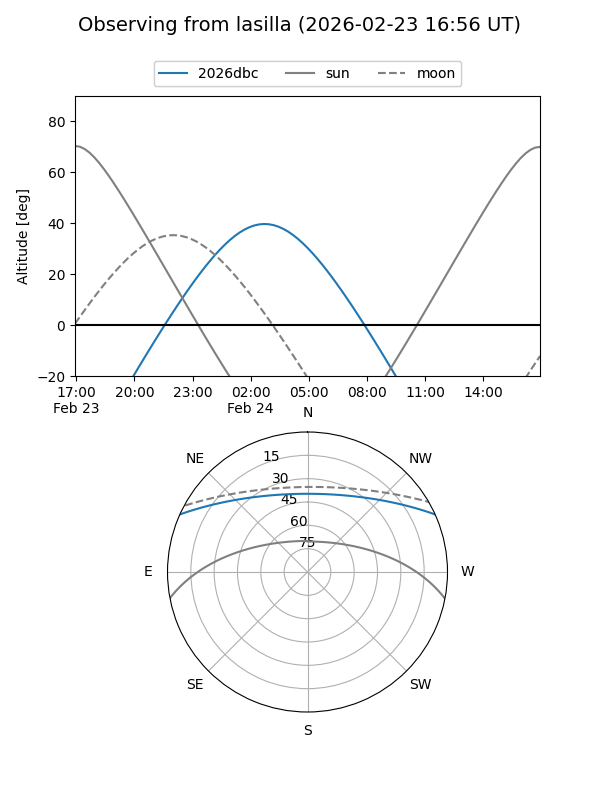
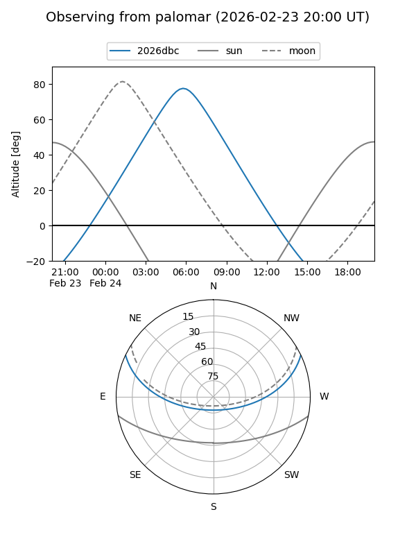

2026dbc
Target 2026dbc at 2026-02-24 09:08
Aliases and brokers:
FINK: link
Lasair: link
ALeRCE: link
TNS: link
YSE: link
alt names
ZTF26aafwmcf (ztf,fink_ztf)
2026dbc (tns,yse)
Coordinates:
equatorial (ra, dec) = 123.6689,+21.10479
equatorial (HMS+DMS) = 08:14:40.52,+21:06:17.25
galactic (l, b) = (201.9431,+27.33274)
Flags:
Photometry:
last ztfg=19.80, ztfr=19.92
1 ztfg, 3 ztfr detections
Lightcurve

Visibility


Additional plots